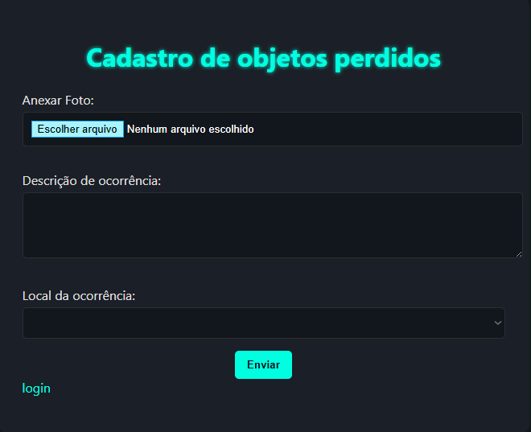

Nosso site consiste em ajudar as pessoas a cadastrar bens materiais perdidos dentro da nossa empresa.
Logo abaixo tera um passo a passo
de como cadastrar os itens perdidos.
Passo 1: Você deve anexar uma foto do item que foi perdido.
Passo 2: Na caixa de comentario, deve ser colocado mais detalhes do ocorrido.
Passo 3: Deve ser indicado o Setor onde possivelmente foi perdido.
 voltar